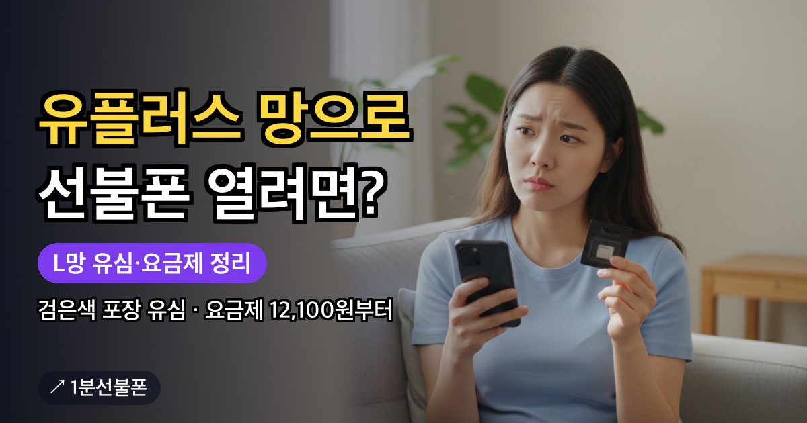

유플러스 선불폰을 찾는다면 앤텔레콤 L망을 보면 됩니다. L망은 LG U+ 통신망을 빌려 쓰는 선불이고, 공식 FAQ는 이렇게 이통사 망을 빌린 서비스가 이통사와 같은 통화품질을 낸다고 설명합니다. 다만 U+ 대리점에서는 가입할 수 없고, 앤텔레콤 신청 페이지나 센터에서 개통합니다. L망 요금제에는 무엇이 있는지, L망이라서 달라지는 개통 포인트와 미리 챙길 것을 한 번에 정리했습니다.
- 앤텔레콤 L망은 LG U+ 망을 빌린 선불, 개통은 U+ 대리점이 아니라 신청 페이지나 센터에서
- L망 유심은 검은색 포장, 이마트24·B마트·지하철 역 자판기에서 판매(CU·GS25에는 없음)
- L망 선불 요금제는 월 12,100원부터 85,900원까지, 구성을 표 하나로 정리
- 옛 LG U+ 폰, 수동 번호 등록, 개통 당일 충전, 본인인증 통신사가 L망 개통 포인트
- 유심 6,600~8,800원에 요금제 12,100원부터, 유심이 준비되면 개통까지 5분
유플러스 선불폰, 개통은 U+ 대리점이 아니라 앤텔레콤에서
앤텔레콤 L망은 LG U+ 통신망을 임대해 쓰는 선불 서비스입니다. 앤텔레콤은 LG와는 다른 통신사라서 LG U+ 대리점에서는 가입할 수 없고, 개통은 두 곳에서 합니다.
- 온라인 — 앤텔레콤 신청 페이지에서 본인 명의 간편인증서(웹은 토스·카카오 등)로 진행합니다.
- 센터 방문 — 간편인증서가 없거나 외국인·미성년자처럼 셀프개통이 안 되는 대상이라면 센터 찾기에서 가까운 곳을 고릅니다.
전체 순서는 개통 방법에 있고, 이 글은 L망에서 달라지는 부분을 다룹니다.
L망 유심 준비, 사기 전에 확인할 것
유플러스 선불유심이라고 찾는 L망 유심은 모두의원칩이라는 이름의 검은색 포장입니다. 이마트24, B마트, 지하철 역 자판기에서 팔고, CU와 GS25에는 LG망 유심이 없으니 헛걸음하지 않도록 주의하세요. 직접 들를 곳이 마땅치 않다면 신청 페이지에서 택배·퀵 배송으로 받을 수도 있습니다. 구매 전에 살펴볼 것은 유심 준비 안내에 모아 두었습니다.
서랍에 예전 U+ 유심이 있어도 앤텔레콤에서는 쓸 수 없습니다. 다른 통신사에서 쓰던 유심은 다시 쓸 수 없고, 앤텔레콤에서만 쓸 수 있는 유심을 새로 구해야 합니다.
L망 선불 요금제, 월 12,100원부터 85,900원까지
L망 선불 요금제 중 많이 비교하는 구성을 가격 순으로 모았습니다. 전체 목록은 아니니 최종 조건은 신청 화면에서 확인하세요.
| 요금제 | 월 요금 | 구성 | 이럴 때 |
|---|---|---|---|
| 기본1 | 12,100원 | 음성 50분·문자 30건·데이터 300MB | 번호만 필요할 때 |
| 데이터 2.5GB | 17,000원 | 음성 100분·문자 50건·데이터 2.5GB | 와이파이 위주일 때 |
| 300분 | 20,800원 | 음성 300분·문자 300건·데이터 300MB(최대 400Kbps) | 통화가 중심일 때 |
| 300M 라이트 | 33,000원 | 음성·문자 기본제공(+부가 50분)·데이터 300MB(최대 1Mbps) | 통화·문자 위주일 때 |
| 396 10.3GB | 39,600원 | 음성·문자 기본제공(+부가 50분)·10.3GB, 소진 후 최대 3Mbps | 일상 데이터를 쓸 때 |
| 5G 20GB+ | 46,400원 | 음성·문자 기본제공(+부가 50분)·20GB, 소진 후 최대 3Mbps | 5G 폰을 쓸 때 |
| 데이터15GB | 49,500원 | 음성 100분·문자 100건·데이터 15GB(최대 3Mbps) | 데이터가 더 필요할 때 |
| 770 | 77,000원 | 음성·문자 기본제공(+부가 300분)·11GB + 매일 2GB | 매일 꾸준히 쓸 때 |
| 매일5GB | 85,900원 | 음성·문자 기본제공(+부가 300분)·매일 5GB(최대 5Mbps) | 가장 많이 쓸 때 |
5G 20GB+는 5G 폰과 이용 조건이 필요하고, 모든 요금제의 최종 조건은 신청 화면에서 확인하세요. 쓰임새별로 고르는 순서는 선불폰 요금제 추천 글에, 전체 목록은 요금제 비교에 있습니다.
L망이라서 달라지는 개통 포인트 네 가지
L망을 고르면 아래 네 가지를 따로 알아 두면 좋습니다.
- 옛 LG U+ 폰 — 2013년 11월 이전에 나온 LG U+ 폰은 유심 이동이 막힐 수 있습니다. 오래된 U+ 폰에 L망 유심을 넣을 계획이라면 먼저 확인하세요.
- 수동 번호 등록 — 개통 뒤 전원을 껐다 켜도 번호 등록이 되지 않으면 전화 거는 화면에서 L망용 코드 #5487587#682#을 입력하는 방법이 있습니다. 앞뒤 순서는 선불폰 유심 인식 안됨 글에 있습니다.
- 개통 당일 충전 — L망 선불은 매달 요금이 차감되는 방식이어서, 개통할 때 고른 요금제의 월 기본료만큼 충전해 둬야 합니다. 이 충전을 개통한 날 안에 끝내지 못하면 다음 날 번호가 멈추거나 해지될 수 있습니다. 자세한 내용은 선불폰 개통 당일 충전 글에 있습니다.
- 본인인증 통신사 — 인증 화면에서 L망은 알뜰폰-LG를 고르는 것이 기본 안내입니다. 이어지는 내용은 선불폰 본인인증 통신사 글에 있습니다.
개통 전에 챙길 것과 드는 돈
가입비는 없고, 드는 돈은 유심값과 요금제 두 가지입니다. 편의점 유심값은 6,600~8,800원이고, 월 요금제는 12,100원짜리부터 고를 수 있습니다. 유심이 준비돼 있으면 개통까지 5분이면 끝납니다.
- 쓸 요금제를 정했는지, 5G 폰이라면 5G 20GB+의 이용 조건을 봤는지
- L망 유심(검은색 포장)을 구했는지, 포장의 상품명과 L망 호환 안내를 확인했는지
- 본인 명의 간편인증서가 있는지(웹은 토스·카카오 등)
- 신규가입은 08:00~21:50, 번호이동은 10:00~19:50 안에 셀프개통을 마칠 수 있는지(번호이동은 일요일·신정·설·추석 당일 불가)
- 개통 뒤 확인 전화(해피콜)를 받을 수 있는지, 받지 못하면 번호가 해지될 수 있음
2026년 10월부터는 안면인증을 반드시 통과해야 개통할 수 있으니, 형광등 반사를 피하고 고개와 시선을 함께 돌려 진행하세요.
자주 묻는 질문
L망 선불폰은 어디에서 개통하나요?
앤텔레콤 신청 페이지에서 본인 명의 간편인증서로 직접 개통하거나, 간편인증서가 없으면 센터를 방문합니다. LG U+ 대리점은 앤텔레콤과 다른 통신사라서 해당하지 않습니다.
유플러스 선불 요금제는 얼마부터 시작하나요?
월 12,100원부터입니다. 음성 50분·문자 30건·데이터 300MB 구성이고, 데이터가 더 필요하면 85,900원까지 단계가 있습니다. 유심값은 따로입니다.
5G 폰이면 어떤 L망 요금제를 보나요?
5G로 쓰려면 L망 5G 선불 20GB+(월 46,400원)를 봅니다. 20GB를 쓴 뒤에는 최대 3Mbps로 이어지고, 5G 폰이어야 하며 이용 조건은 신청 화면에서 확인해야 합니다.
데이터를 거의 안 쓰면 L망에서 어떤 요금제가 맞나요?
와이파이 위주라면 월 12,100원 기본1(음성 50분·문자 30건·데이터 300MB)이나 월 17,000원 데이터 2.5GB(음성 100분·문자 50건)를 비교해 보세요. 통화가 중심이라면 월 20,800원 300분 요금제가 있습니다. 최종 조건은 신청 화면에서 확인하세요.
최종 업데이트: